Année Universitaire : 2024–2025
Réseaux et Systèmes
Table des matières
La navigation est disponible dans la barre latérale gauche.
Liste des figures
- Figure 1. Vue globale de la topologie réseau
- Figure 1.1 Topologie backbone simulée dans GNS3
- Figure 1.2 Exemple de configuration d'une interface de RZ-1
- Figure 1.3 État des interfaces de RZ-1
- Figure 1.4 Exemple de configuration d'une interface de RZ-2
- Figure 1.5 État des interfaces de RZ-2
- Figure 1.6 Exemple de configuration d'une interface de RZ-3
- Figure 1.7 État des interfaces de RZ-3
- Figure 1.8 Exemple de configuration d'une interface de RZ-4
- Figure 1.9 État des interfaces de RZ-4
- Figure 1.10 État des interfaces de RZ-5
- Figure 1.11 Topologie du département Web/Marketing dans GNS3
- Figure 1.12 Topologie du département Supervision/IT dans GNS3
- Figure 1.13 Topologie du département Base de données/Gestion dans GNS3
- Figure 1.14 Topologie du département Partage/Collaboration dans GNS3
- Figure 2.1 Création de la VM Ubuntu dans VMware — Étape 1
- Figure 2.2 Création de la VM Ubuntu dans VMware — Étape 2
- Figure 2.3 Création de la VM Ubuntu dans VMware — Étape 3
- Figure 2.4 Configuration de l'adaptateur VMnet2 Host-Only
- Figure 2.5 Topologie GNS3 avec le nœud Cloud connecté au switch
- Figure 2.6 Configuration du nœud Cloud lié à VMnet2
- Figure 2.7 Configuration réseau de l'interface ens33 dans le fichier YAML
- Figure 2.8 Validation de la configuration Netplan
- Figure 2.9 Test de ping dans le LAN vers l'interface du routeur
- Figure 2.10 Test de ping à partir d'un PC dans le LAN
- Figure 2.11 Installation et configuration du serveur NFS
- Figure 2.12 Gestion des utilisateurs et des permissions NFS
- Figure 2.13 Script Shell d'automatisation du service NFS
- Figure 2.14 Fichier YAML pour le service NFS
- Figure 2.15 Tests de ping pour le service NFS
- Figure 2.16 Interface Prometheus — Targets actifs
- Figure 2.17 Tableau de bord Grafana
- Figure 2.18 Configuration des alertes de supervision
- Figure 2.19 Script Shell d'automatisation du monitoring
- Figure 2.20 Topologie GNS3 pour le service Base de données
- Figure 2.21 Fichier YAML pour le service Base de données
- Figure 2.22 Tests de ping pour le service Base de données
- Figure 2.23 Installation du serveur MySQL et du serveur Web Apache
- Figure 2.24 Création de la base de données
- Figure 2.25 Création des utilisateurs et attribution des privilèges
- Figure 2.26 Configuration de la connexion entre l'application Web et la base de données
- Figure 2.27 Fichier de connexion à la base de données
- Figure 2.28 Affichage des données de la base via la page Web
- Figure 2.29 Script Shell d'automatisation du service Web et Base de données
- Figure 3.1 Synthèse de l'architecture Defense in Depth
- Figure 3.2 Flux d'attaque et barrières de sécurité
Liste des tableaux
- Tableau 1.1 Demande d'adresses IP pour chaque sous-réseau du plan VLSM
- Tableau 1.2 Adresses réseau, diffusion et valides pour chaque sous-réseau
- Tableau 3.1 Matrice de la stack de sécurité
- Tableau 3.2 Matrice des flux de trafic ACL
- Tableau 3.3 Paramètres du tunnel IPsec R1 ↔ R3
- Tableau 3.4 Comparaison des solutions VPN
- Tableau 3.5 Architecture des zones pfSense
- Tableau 3.6 Règles de firewall pfSense
- Tableau 3.7 Comparaison ACL Cisco vs pfSense
- Tableau 4.1 Matrice des tests de connectivité
Préparation du Réseau
Topologie du Réseau
Schéma global de l'infrastructure
La topologie mise en place s'articule autour d'un backbone public composé de cinq routeurs (RZ-1 à RZ-5). Le routeur RZ-5 est chargé de la connexion vers l'extérieur via un nœud NAT-Internet, simulant la passerelle fournie par le FAI.
Chaque département est représenté par une zone de service distincte, composée d'un routeur (R1 à R4), d'un commutateur et d'un ensemble de postes clients. Les réseaux internes des services utilisent des adresses privées, tandis que toutes les liaisons inter-routeurs (backbone et accès au backbone) utilisent des sous-réseaux publics dédiés.
Structure globale du réseau
Les composants principaux sont :
- Backbone maillé : 5 routeurs RZ-1 à RZ-5 interconnectés en maillage complet
- 4 zones de service : Web/Marketing, Supervision/IT, Base de données, Gestion Partage/Collaboration
- NAT-Internet : Point de sortie unique vers l'extérieur via RZ-5
- Tunnels UDP GNS3 : Interconnexion entre machines physiques distantes
Justification du maillage du backbone
Le backbone adopte une topologie maillée complète, chaque routeur étant directement connecté à tous les autres. Ce choix apporte plusieurs avantages structurants :
- Tolérance élevée aux pannes : la défaillance d'un lien n'interrompt pas la circulation du trafic.
- Chemins multiples : l'algorithme SPF d'OSPF peut sélectionner le meilleur chemin en fonction du coût.
- Répartition de charge et optimisation du routage.
- Performance et stabilité accrues pour un réseau multi-départements.
Cette structure robuste est particulièrement adaptée aux environnements critiques ou segmentés en plusieurs services indépendants.
Comptage des sous-réseaux
Les besoins en sous-réseaux se répartissent comme suit :
- 4 sous-réseaux privés : un pour chaque LAN de service (SR1 à SR4).
- 14 sous-réseaux publics, incluant :
- 10 pour les liaisons du backbone (maillage complet entre RZ-1 à RZ-5)
- 4 pour les liaisons RZ-x ↔ Rx (accès des services au backbone)
Total : 18 sous-réseaux.
Rôle du nœud NAT-Internet
Le nœud NAT-Internet, placé derrière le routeur central RZ-5, assure la conversion des adresses internes vers le réseau externe. Ce positionnement garantit :
- Une gestion centralisée de l'accès Internet
- Une sécurisation des flux sortants et entrants
- Une cohérence avec les environnements réels, où un seul routeur frontière assure le NAT vers le FAI
Ainsi, tous les services internes peuvent accéder à Internet via un point unique et contrôlé.
Répartition sur plusieurs machines physiques
Pour des raisons de performance et de clarté, la topologie est répartie sur cinq machines physiques distinctes :
- 1 machine dédiée au backbone complet (RZ-1 à RZ-5 + NAT)
- 4 machines dédiées aux services (SR1 à SR4)
Chaque routeur de service est relié à son routeur d'accès du backbone à travers un tunnel UDP GNS3, reproduisant le comportement d'un câble physique entre deux équipements distants. Le routage entre machines s'appuie sur des routes statiques assurant l'accessibilité des réseaux privés et publics.
Plan d'adressage VLSM
Tableau des besoins en adresses
Avant de procéder à l'allocation des adresses IP pour notre réseau d'entreprise, nous avons identifié les besoins en termes de nombre d'adresses pour chaque sous-réseau.
Pour optimiser l'utilisation de l'espace d'adressage disponible et éviter le gaspillage, nous avons choisi la méthode VLSM (Variable Length Subnet Mask). Cette méthode permet d'adapter le masque de sous-réseau en fonction du nombre réel d'hôtes nécessaires dans chaque segment, offrant ainsi une flexibilité et une efficacité accrues.
| Sous-réseau | Routeurs | Adresses totales demandées |
|---|---|---|
| SR1 (Web/Marketing) | R1 | 6810 + 3 = 6813 |
| SR2 (Supervision/IT) | R2 | 1270 + 3 = 1273 |
| SR3 (BD/Gestion) | R3 | 424 + 3 = 427 |
| SR4 (Partage/Collab) | R4 | 192 + 3 = 195 |
| SR5 (Backbone) | RZ1–RZ5 | 2 + 2 = 4 |
| SR6 (Backbone) | RZ2–RZ5 | 2 + 2 = 4 |
| SR7 (Backbone) | RZ3–RZ5 | 2 + 2 = 4 |
| SR8 (Backbone) | RZ4–RZ5 | 2 + 2 = 4 |
| SR9 (Backbone) | RZ1–RZ2 | 2 + 2 = 4 |
| SR10 (Backbone) | RZ2–RZ3 | 2 + 2 = 4 |
| SR11 (Backbone) | RZ3–RZ4 | 2 + 2 = 4 |
| SR12 (Backbone) | RZ1–RZ3 | 2 + 2 = 4 |
| SR13 (Backbone) | RZ2–RZ4 | 2 + 2 = 4 |
| SR14 (Backbone) | RZ1–RZ4 | 2 + 2 = 4 |
| SR15 (Accès) | RZ1–R1 | 2 + 2 = 4 |
| SR16 (Accès) | RZ2–R2 | 2 + 2 = 4 |
| SR17 (Accès) | RZ3–R3 | 2 + 2 = 4 |
| SR18 (Accès) | RZ4–R4 | 2 + 2 = 4 |
Plan d'adressage détaillé
Cette section présente le plan d'adressage détaillé pour chaque sous-réseau du réseau. Elle inclut les masques de sous-réseau calculés via VLSM, les adresses réseau et de diffusion, ainsi que les plages d'adresses IP valides.
| SR | MSR | @ Réseau | @ Diffusion | @ Valides |
|---|---|---|---|---|
| SR1 | /19 | 10.10.0.0 | 10.10.31.255 | [10.10.0.1 – 10.10.31.254] |
| SR2 | /21 | 10.10.32.0 | 10.10.39.255 | [10.10.32.1 – 10.10.39.254] |
| SR3 | /23 | 10.10.40.0 | 10.10.41.255 | [10.10.40.1 – 10.10.41.254] |
| SR4 | /24 | 10.10.42.0 | 10.10.42.255 | [10.10.42.1 – 10.10.42.254] |
| SR5 | /30 | 50.50.50.0 | 50.50.50.3 | [50.50.50.1 – 50.50.50.2] |
| SR6 | /30 | 50.50.50.4 | 50.50.50.7 | [50.50.50.5 – 50.50.50.6] |
| SR7 | /30 | 50.50.50.8 | 50.50.50.11 | [50.50.50.9 – 50.50.50.10] |
| SR8 | /30 | 50.50.50.12 | 50.50.50.15 | [50.50.50.13 – 50.50.50.14] |
| SR9 | /30 | 50.50.50.16 | 50.50.50.19 | [50.50.50.17 – 50.50.50.18] |
| SR10 | /30 | 50.50.50.20 | 50.50.50.23 | [50.50.50.21 – 50.50.50.22] |
| SR11 | /30 | 50.50.50.24 | 50.50.50.27 | [50.50.50.25 – 50.50.50.26] |
| SR12 | /30 | 50.50.50.28 | 50.50.50.31 | [50.50.50.29 – 50.50.50.30] |
| SR13 | /30 | 50.50.50.32 | 50.50.50.35 | [50.50.50.33 – 50.50.50.34] |
| SR14 | /30 | 50.50.50.36 | 50.50.50.39 | [50.50.50.37 – 50.50.50.38] |
| SR15 | /30 | 50.50.50.40 | 50.50.50.43 | [50.50.50.41 – 50.50.50.42] |
| SR16 | /30 | 50.50.50.44 | 50.50.50.47 | [50.50.50.45 – 50.50.50.46] |
| SR17 | /30 | 50.50.50.48 | 50.50.50.51 | [50.50.50.49 – 50.50.50.50] |
| SR18 | /30 | 50.50.50.52 | 50.50.50.55 | [50.50.50.53 – 50.50.50.54] |
Configuration dans GNS3
Backbone
Topologie backbone
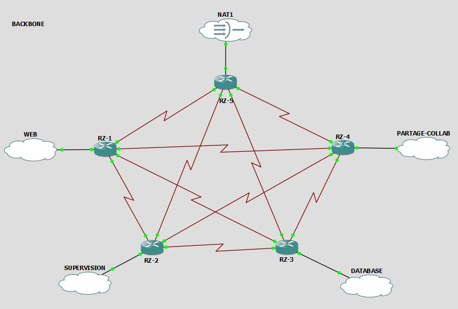
Configuration des routeurs du backbone
Pour configurer le backbone, nous avons assigné des adresses IP à chaque interface des routeurs en suivant les sous-réseaux publics définis dans nos tables VLSM. Chaque interface a été activée à l'aide de la commande no shutdown et les configurations ont été sauvegardées avec write memory pour garantir leur persistance.
Dans un premier temps, nous avons utilisé le routage statique pour vérifier la connectivité et tester l'ensemble des liens entre les routeurs. Cette approche nous permet de contrôler précisément les chemins empruntés par le trafic et de nous assurer que toutes les interfaces communiquent correctement. Une fois cette vérification terminée, nous migrerons vers le protocole OSPF afin de bénéficier de la convergence automatique et d'une gestion dynamique des routes pour l'ensemble du backbone.
Configuration de RZ-1
Les figures ci-dessous illustrent la configuration d'une interface sur le routeur RZ-1, ainsi que l'état des interfaces avec la commande show ip interface brief, confirmant leur activation et l'assignation correcte des adresses IP.
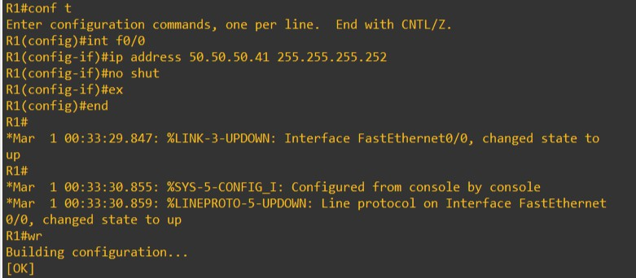
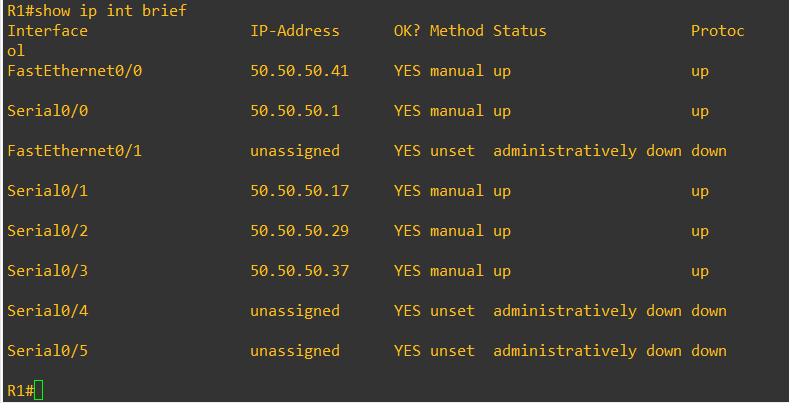
Configuration de RZ-2
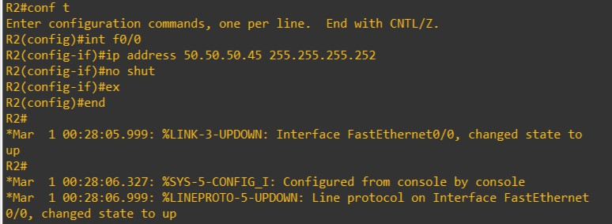
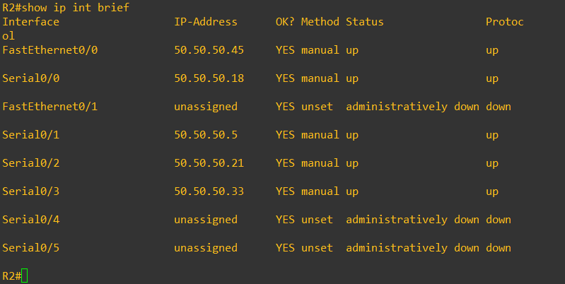
Configuration de RZ-3
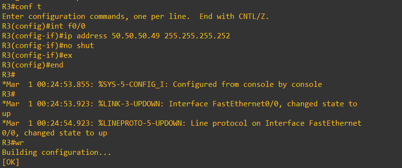
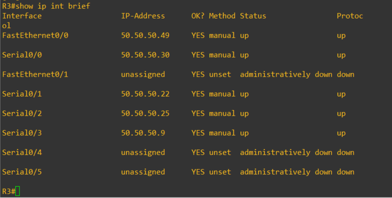
Configuration de RZ-4
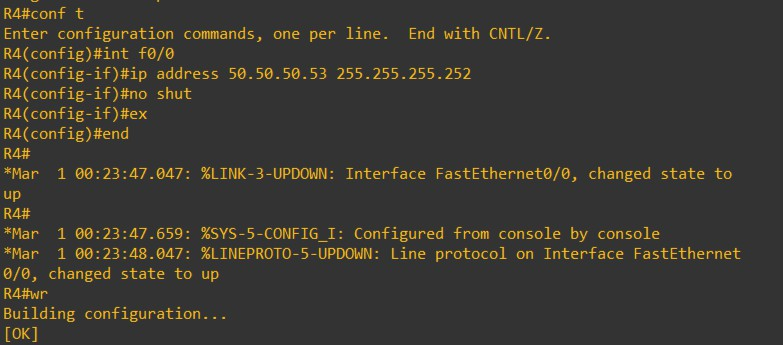
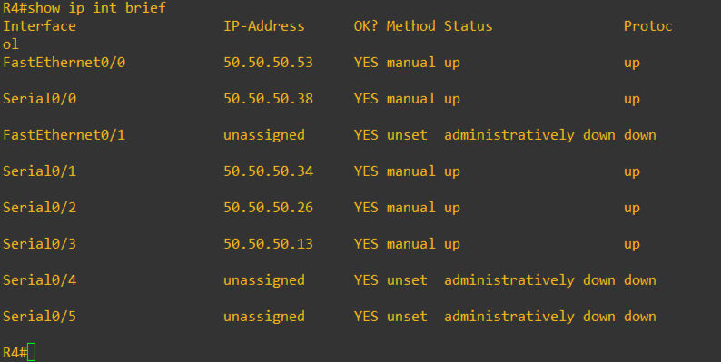
Configuration de RZ-5
La figure ci-dessous présente l'état des interfaces du routeur principal RZ-5 avec la commande show ip interface brief. Ce routeur servira à l'avenir de point de connexion vers le nœud NAT pour l'accès à Internet.
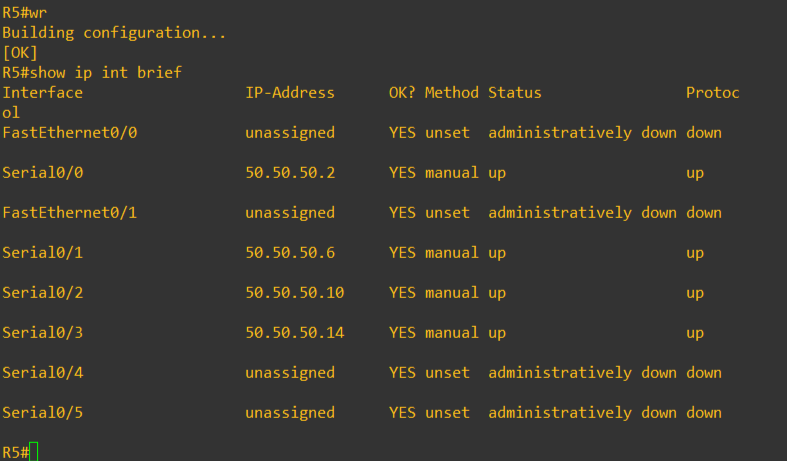
Département Web / Marketing
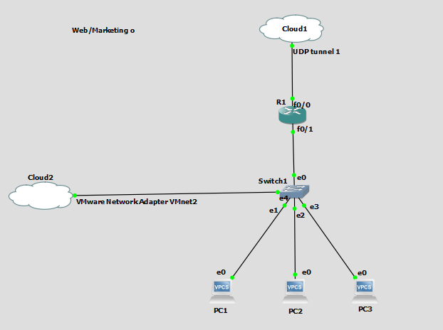
La zone Web/Marketing constitue l'une des zones fonctionnelles principales de l'infrastructure réseau de TechSolutions SARL. Elle simule le département responsable de la gestion du site Internet de l'entreprise ainsi que des interactions avec les clients externes.
Composants principaux
- Routeur de zone R1 : Routeur Cisco émulé dans GNS3 qui assure l'interconnexion entre la zone locale et le backbone
- Switch local Switch1 : Interconnecte les équipements de la zone
- Postes clients PC1, PC2, PC3 : Machines VPCS simulant les postes de travail des employés du département Marketing
- Cloud externe : Émulation d'Internet connectée à R1 via un tunnel UDP
Rôle fonctionnel
Cette zone est critique car elle héberge les services Web publics de TechSolutions SARL. Elle doit garantir :
- Une disponibilité élevée du site Internet
- Un accès sécurisé pour les employés internes (quel que soit leur département)
- Une protection renforcée contre les menaces externes via filtrage ACL et VPN
Département Supervision / IT
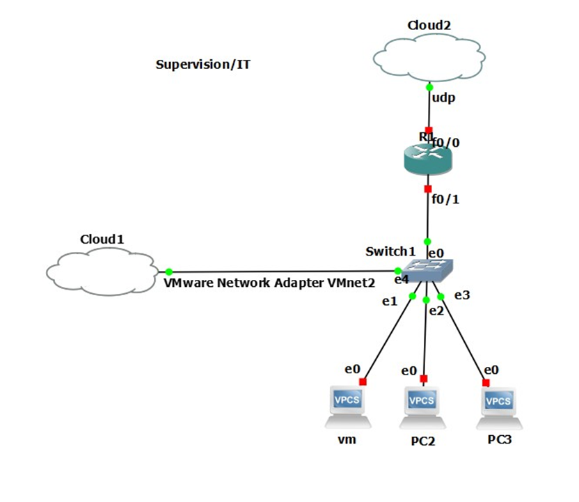
La zone Supervision/IT est dédiée à l'administration, à la surveillance et à la maintenance de l'infrastructure réseau de TechSolutions SARL.
Composants principaux
- Routeur de zone R2 : Assure la liaison entre la zone IT et les réseaux externes via un tunnel UDP
- Switch local : Connectivité entre les postes IT et les machines virtuelles de supervision
- VM de supervision : Machine VPCS pour le monitoring
- PC2 et PC3 : Postes administrateurs IT chargés de la gestion du réseau
Connectivité et sécurité
- Accès restreint réservé uniquement aux administrateurs IT
- Utilisation de tunnels sécurisés pour l'administration à distance
- Mise en place de politiques de sécurité renforcées (ACL, journalisation, surveillance active)
- Séparation stricte entre trafic utilisateur et trafic d'administration
Département Base de données / Gestion
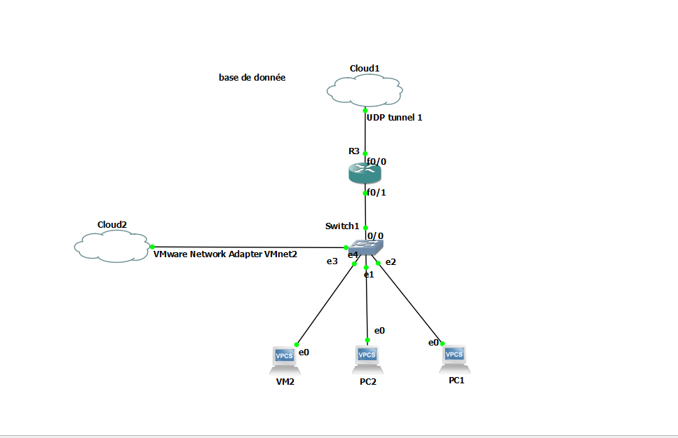
La zone Base de Données/Gestion constitue une zone critique de l'infrastructure, dédiée à l'hébergement des systèmes de gestion et des bases de données utilisées par les applications internes.
Composants principaux
- Routeur de zone R3 : Interconnexion entre le département et le réseau global
- Switch local : Centralise la connectivité entre les serveurs de base de données et les postes clients
- VM2 : Serveur de base de données ou machine d'administration
- PC1 et PC2 : Postes clients représentant les utilisateurs du service Gestion
Connectivité et sécurité
- Le sous-réseau est isolé logiquement des autres départements
- L'accès aux bases de données est strictement contrôlé via des règles de filtrage réseau
- Les communications inter-zones sont sécurisées à l'aide de tunnels chiffrés
- Seuls les postes et serveurs autorisés peuvent accéder aux services critiques
Département Partage / Collaboration
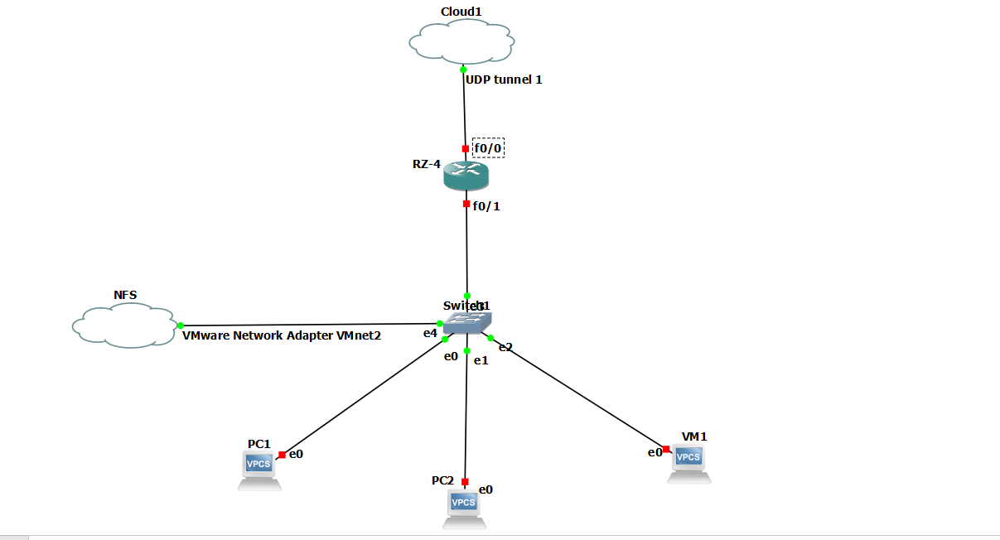
La zone Partage/Collaboration représente un département stratégique dédié à la centralisation, au stockage et au partage sécurisé des fichiers entre les différents services de l'entreprise via le protocole NFS (Network File System).
Composants principaux
- Routeur de zone RZ-4 : Connectivité entre le réseau local et le reste de l'infrastructure
- Switch local : Interconnexion des machines clientes et du serveur NFS
- NFS Server : Serveur Linux hébergeant les répertoires partagés exportés via NFS
- PC1, PC2, VM1 : Postes clients simulant les utilisateurs du département Collaboration
Tests de connectivité initiaux
Des tests de ping ont été effectués pour valider la connectivité de base entre les différents équipements du réseau. Ces tests permettent de vérifier que :
- Les interfaces des routeurs sont correctement configurées et activées
- Les liaisons physiques et logiques entre routeurs sont opérationnelles
- Les postes clients peuvent atteindre leur passerelle par défaut
- La communication inter-départements est fonctionnelle via le backbone
Partie Système — Déploiement des Services
Ce chapitre décrit les étapes nécessaires pour connecter les machines virtuelles à GNS3 et préparer l'environnement pour l'installation des services.
Service Web
Création de la machine virtuelle
Nous avons créé une nouvelle machine virtuelle dans VMware et installé Ubuntu comme système d'exploitation. Cette VM servira de serveur pour le service Web et permettra de tester les communications réseau avec le reste de l'infrastructure.
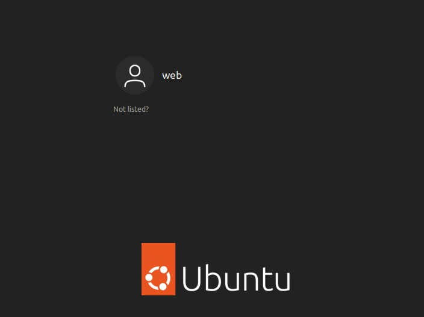
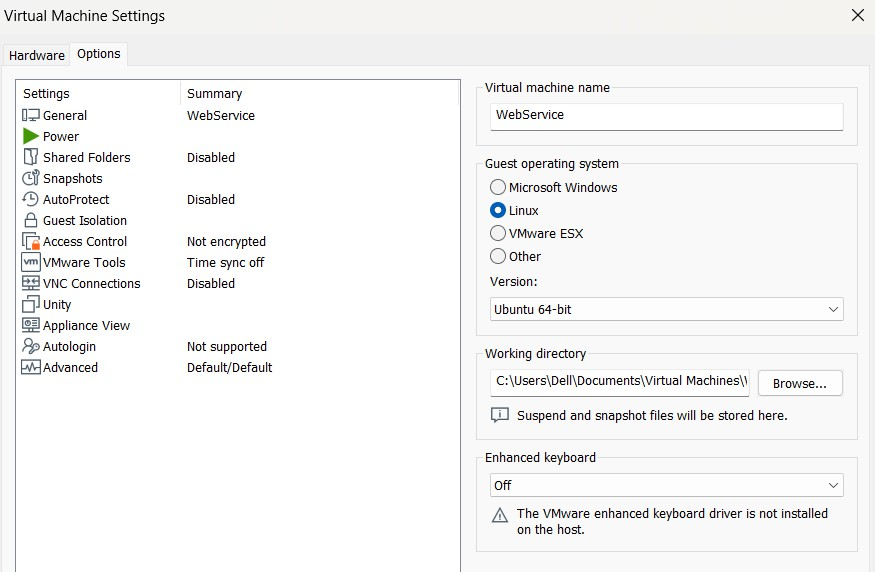
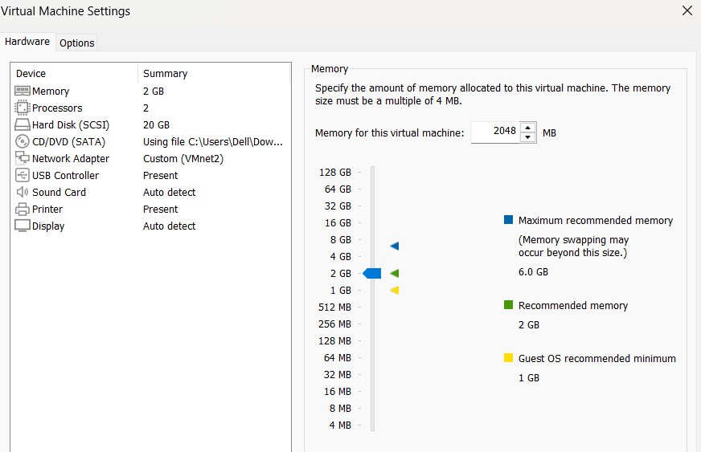
Configuration du réseau de la VM
Nous avons ajouté un adaptateur réseau VMnet2 Host-Only dans les paramètres de la VM. L'utilisation de VMnet2 Host-Only permet à la VM de communiquer uniquement avec l'hôte et les autres VMs sur ce réseau, garantissant un environnement isolé pour nos tests.
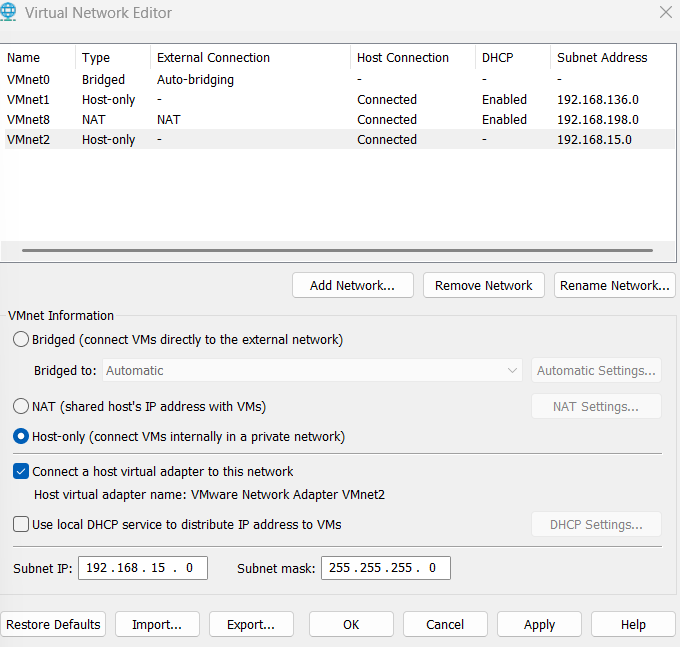
Topologie GNS3 et configuration du cloud
Après avoir configuré la VM, nous avons créé une nouvelle topologie dans GNS3. Nous avons ajouté un nœud Cloud qui est lié au switch et connecté au réseau VMnet2. Cela permet à la VM Ubuntu de communiquer avec le reste de l'infrastructure réseau simulée dans GNS3, en reliant le monde virtuel de VMware au réseau simulé.
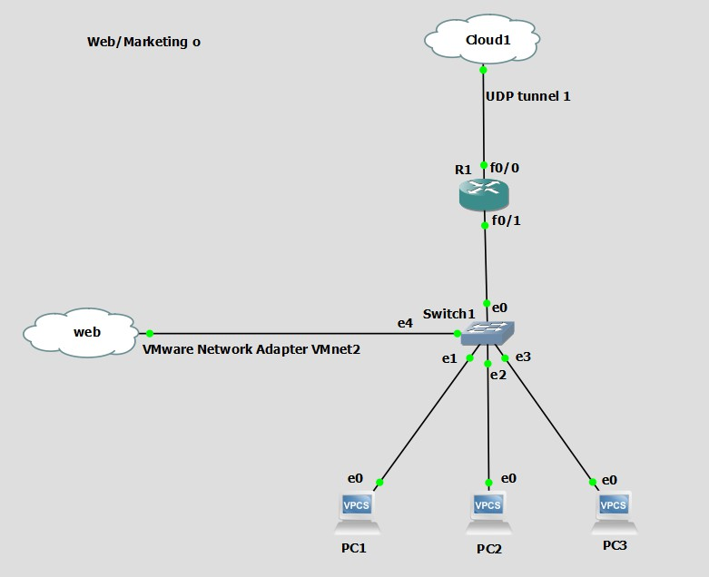
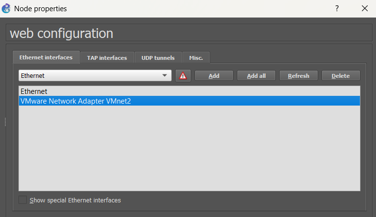
Configuration de l'interface réseau (Netplan YAML)
Nous avons configuré l'interface réseau de la VM en modifiant le fichier YAML correspondant, en spécifiant l'interface ens33. Cela permet de définir l'adresse IP, le masque et les paramètres nécessaires pour que la VM puisse communiquer avec le réseau simulé dans GNS3.
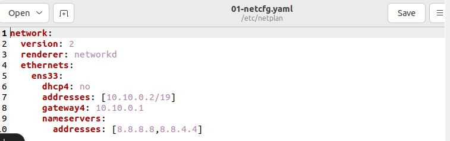
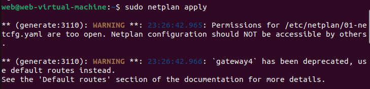
Tests de connectivité
Enfin, nous avons effectué des tests de ping pour vérifier la connectivité entre les différentes machines du LAN et s'assurer que le réseau fonctionne correctement.
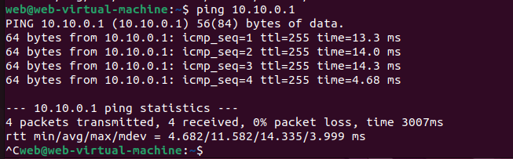
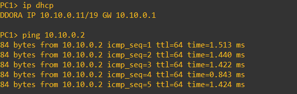
Service NFS
Installation et configuration du serveur NFS
Le service NFS (Network File System) a été mis en place afin de permettre le partage de ressources de stockage entre plusieurs clients du réseau. Nous avons installé le serveur NFS sur une machine Ubuntu dédiée, puis configuré un répertoire partagé accessible aux clients autorisés.
NFS permet aux machines clientes de monter un répertoire distant comme s'il s'agissait d'un dossier local, facilitant ainsi la collaboration et le partage de fichiers au sein de l'entreprise.
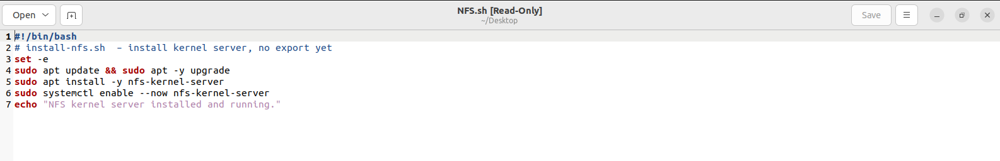
Gestion des utilisateurs et des droits d'accès
Des utilisateurs et groupes ont été créés afin de contrôler l'accès au répertoire partagé. Les permissions ont été définies de manière à garantir la sécurité et l'intégrité des données partagées.
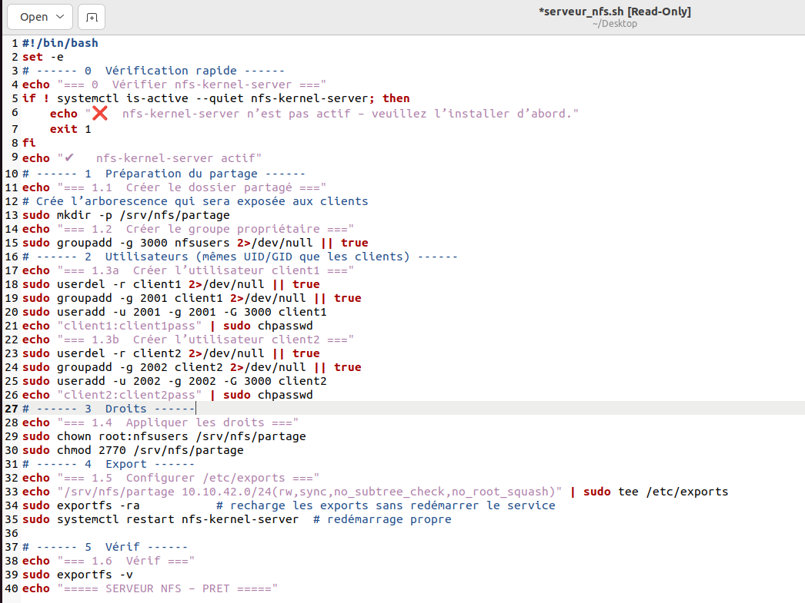
Automatisation via script Shell
Un script Shell a été développé pour automatiser l'installation du serveur NFS, la création des utilisateurs et la configuration des répertoires partagés. L'automatisation permet de réduire les erreurs humaines, d'accélérer le déploiement et d'assurer une configuration reproductible.
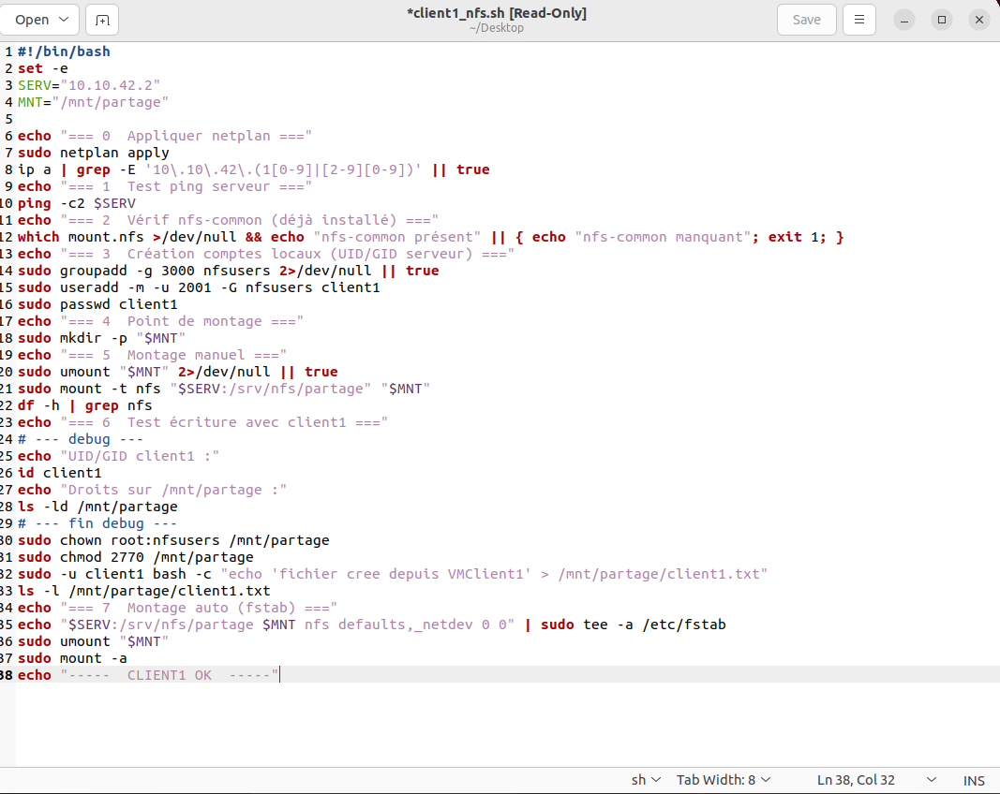
Configuration réseau et tests
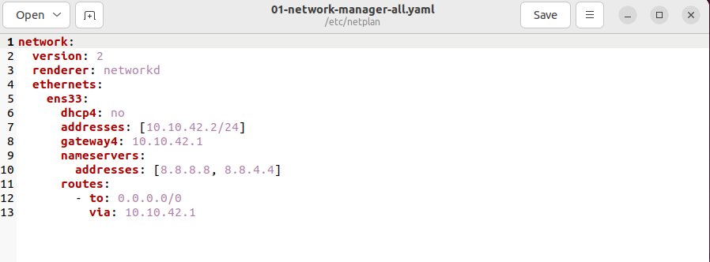
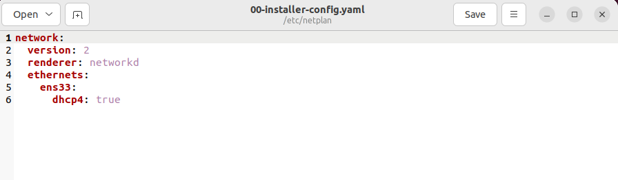
Monitoring
Déploiement de Prometheus et Grafana
Un système de supervision a été déployé afin de surveiller l'état et les performances des machines du réseau. Prometheus a été utilisé pour la collecte des métriques, tandis que Grafana a permis leur visualisation à travers des tableaux de bord interactifs. Node Exporter a été installé sur les machines supervisées afin de remonter les informations système (CPU, mémoire, disque, réseau).
La supervision permet de détecter rapidement les anomalies et d'assurer la disponibilité continue des services critiques.
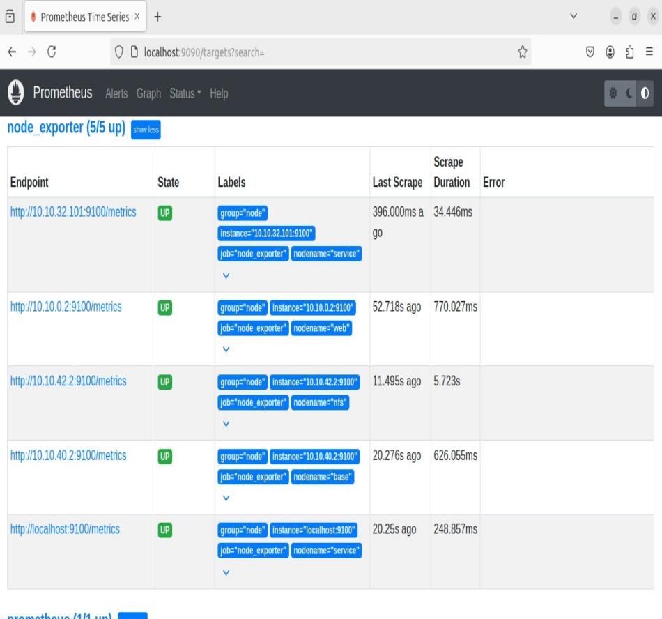
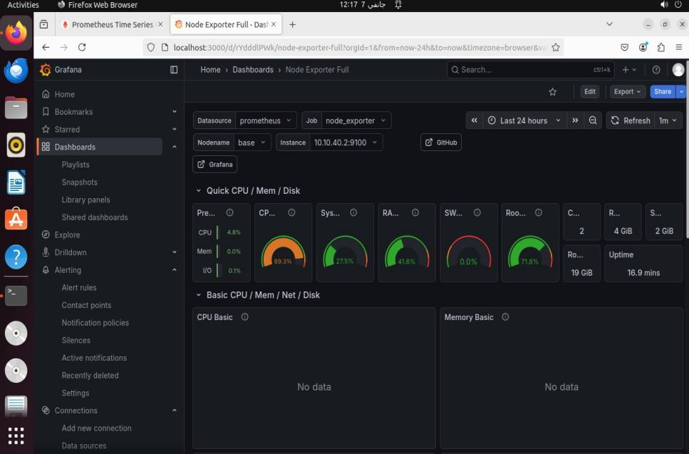
Mise en place d'alertes
Des règles d'alertes ont été configurées afin de détecter des situations critiques telles qu'une surcharge CPU, un manque de mémoire ou l'indisponibilité d'un service. Les alertes permettent une réaction rapide de l'administrateur système avant qu'un incident n'impacte les utilisateurs.

Automatisation via script Shell
Un script Shell a été développé pour automatiser l'installation de Prometheus, Grafana et Node Exporter, ainsi que la configuration des services et leur démarrage automatique. Cette automatisation permet un déploiement rapide, cohérent et reproductible du système de supervision.
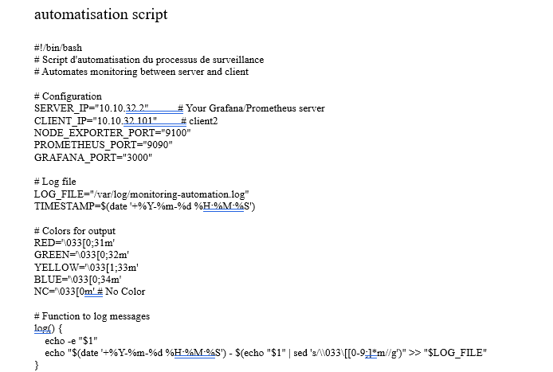
Service Base de données
La configuration de base est identique à celle du service Web, seuls les paramètres réseau dans le fichier YAML changent.
Topologie GNS3
Configuration réseau
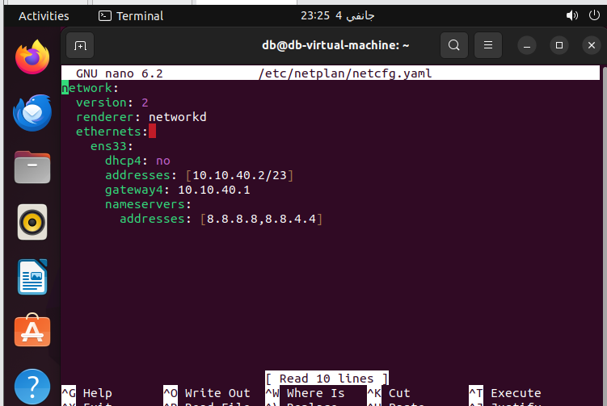
Tests de connectivité

Installation de MySQL et Apache
MySQL permet de stocker et gérer les données de manière centralisée, tandis qu'Apache assure l'hébergement des pages Web. Cette architecture est couramment utilisée dans les applications Web dynamiques nécessitant une interaction avec une base de données.
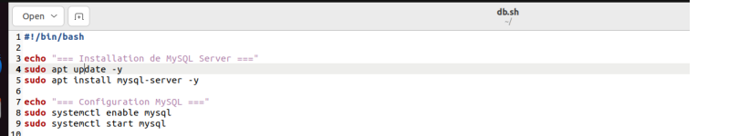
Création de la base de données et gestion des droits
Une base de données a été créée afin de stocker les informations nécessaires à l'application. Deux types de comptes ont été définis : un compte administrateur disposant de tous les privilèges et un compte utilisateur avec des droits limités. La gestion des droits permet de renforcer la sécurité du système en limitant l'accès aux données sensibles uniquement aux utilisateurs autorisés.
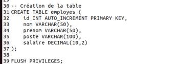

Liaison application Web — Base de données
Une liaison a été établie entre le serveur Web et la base de données afin de permettre à l'application Web d'accéder aux données stockées dans MySQL. Cette connexion permet d'afficher dynamiquement le contenu de la base de données à travers une page Web.
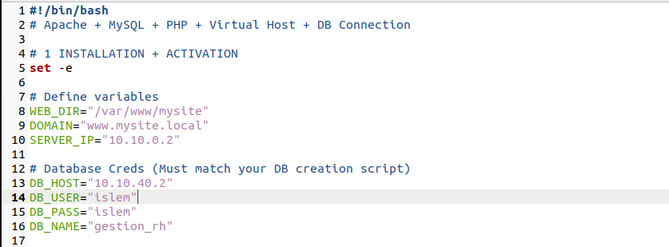
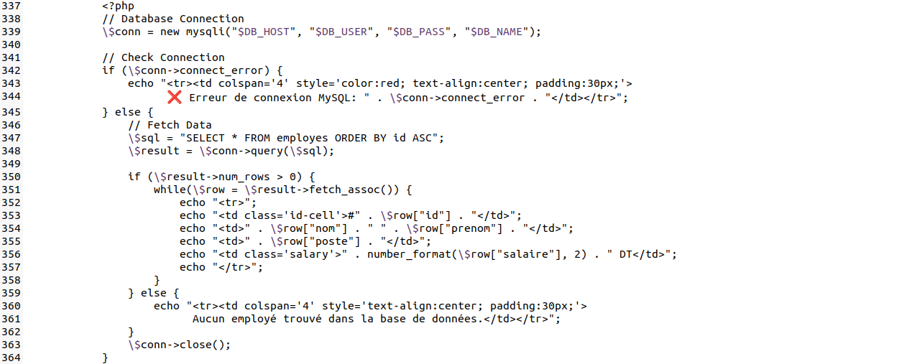
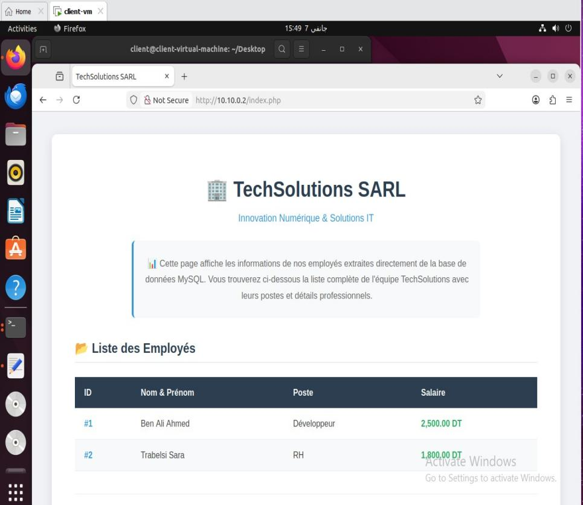
Automatisation via script Shell
Un script Shell a été développé afin d'automatiser l'installation de MySQL et Apache, la création de la base de données, des utilisateurs ainsi que la configuration de la connexion entre le serveur Web et la base de données.

Sécurité — Architecture Defense in Depth
Ce chapitre présente l'architecture de sécurité déployée pour protéger l'infrastructure multiservice de TechSolutions SARL. Notre approche repose sur un modèle Defense in Depth (Défense en profondeur) à trois couches indépendantes : ACL Cisco (L1), VPN IPsec (L2) et Firewall pfSense (L3).
Vue d'ensemble de l'architecture de sécurité
L'infrastructure implémente un modèle de sécurité à trois couches. Chaque couche protège indépendamment contre un vecteur de menace distinct. Le contournement d'une couche ne permet pas l'accès — l'attaquant fait toujours face aux deux couches restantes.
| Couche | Technologie | Type | Objectif |
|---|---|---|---|
| 1 | ACL Cisco | Filtrage stateless L3/L4 | Segmentation inter-VLAN |
| 2 | VPN IPsec | Chiffrement site-à-site | Confidentialité sur backbone |
| 3 | pfSense | Firewall stateful L3–L7 | Contrôle périphérique |
Architecture Defense in Depth
| Couche 3 — pfSense Default Deny · Stateful L3–L7 · Logging |
| Couche 2 — IPsec VPN AES Encryption · HMAC-SHA Integrity · PFS |
| Couche 1 — Cisco ACL Implicit Deny · L3/L4 Segmentation · Per-interface |
| Zones critiques : BD / IT / Web |
Couche 1 — ACL Cisco : Filtrage Stateless L3/L4
Les ACL sont déployées sur les routeurs d'accès R1–R4 pour renforcer la segmentation inter-départements et protéger les interfaces critiques.
Principe fondamental : Implicit Deny
Toute ACL se termine par un deny any any invisible. Tout ce qui n'est pas explicitement permis est silencieusement rejeté.
Matrice des flux de trafic
| Source | Destination | Service | Action | Justification |
|---|---|---|---|---|
| Web LAN 10.10.0.0/19 | 192.168.0.1 | TCP 80/443 | PERMIT | Flux métier — publication Web |
| IT LAN 10.10.32.0/21 | Any | TCP 22 | PERMIT | SSH admin — uniquement zone IT |
| Any | BD LAN 10.10.40.0/23 | TCP 3306 | DENY | MySQL direct bloqué — serveur app uniquement |
| Collab 10.10.42.0/24 | Web LAN | ANY | DENY | Pas d'accès cross-zone sans backbone |
| BD LAN 10.10.40.0/23 | 192.168.40.1 | TCP 21 | PERMIT | Transferts FTP contrôlés en zone |
Configuration ACL sur R3 (Protection BD/Gestion)
! ACL etendue pour la protection de la zone BD
ip access-list extended PROTECT_BD
! Autoriser MySQL UNIQUEMENT depuis le serveur Web applicatif
permit tcp host 10.10.0.2 10.10.40.0 0.0.1.255 eq 3306
! Autoriser SSH administration depuis zone IT uniquement
permit tcp 10.10.32.0 0.0.7.255 10.10.40.0 0.0.1.255 eq 22
! Autoriser scraping Prometheus depuis serveur monitoring
permit tcp host 10.10.32.101 10.10.40.0 0.0.1.255 eq 9100
! Implicit deny -- tout autre trafic silencieusement droppe
! deny ip any any (invisible, toujours actif)
! Application sur l'interface LAN
interface FastEthernet0/1
ip access-group PROTECT_BD inPROTECT_BD sur le routeur R3Vérification et compteurs
R3# show ip access-lists
Extended IP access list PROTECT_BD
10 permit tcp host 10.10.0.2 10.10.40.0 0.0.1.255 eq 3306 (45 matches)
20 permit tcp 10.10.32.0 0.0.7.255 10.10.40.0 0.0.1.255 eq 22 (12 matches)
30 permit tcp host 10.10.32.101 10.10.40.0 0.0.1.255 eq 9100 (892 matches)Couche 2 — VPN IPsec : Chiffrement Site-à-Site
Les tunnels IPsec protègent le trafic inter-sites traversant le backbone public. IKE Phase 1 établit le canal de contrôle sécurisé ; Phase 2 négocie les SA de protection des données.
Topologie des tunnels
Le tunnel IPsec principal est établi entre le routeur R1 (zone Web) et R3 (zone BD) pour sécuriser les échanges entre le serveur Web et la base de données.
| Paramètre | Valeur |
|---|---|
| Paire | R1 (Web) ↔ R3 (BD) |
| Adresses publiques | 50.50.50.41 / 50.50.50.49 |
| Réseaux privés | 10.10.0.0/19 / 10.10.40.0/23 |
| Phase 1 — Encryption | AES |
| Phase 1 — Hash | SHA |
| Phase 1 — Authentification | Pre-shared key |
| Phase 1 — DH Group | 2 |
| Phase 1 — Lifetime | 86400s |
| Phase 2 — Transform Set | ESP-AES, ESP-SHA-HMAC |
| Phase 2 — PFS | Group 2 |
| Clé pré-partagée | TechSol$VPN2024 |
Configuration complète (côté R1)
! ============================================================
! Phase 1 -- ISAKMP Policy
! ============================================================
crypto isakmp policy 10
encryption aes
hash sha
authentication pre-share
group 2
lifetime 86400
! Cle pre-partagee pour le pair R3
crypto isakmp key TechSol$VPN2024 address 50.50.50.49
! ============================================================
! Phase 2 -- Transform-Set
! ============================================================
crypto ipsec transform-set TS_TECHSOL esp-aes esp-sha-hmac
! ============================================================
! Trafic interessant (ce qui entre dans le tunnel)
! ============================================================
ip access-list extended CRYPTO_R1_R3
permit ip 10.10.0.0 0.0.31.255 10.10.40.0 0.0.1.255
! ============================================================
! Crypto Map -- lie pair, transform-set et ACL
! ============================================================
crypto map CM_TECHSOL 10 ipsec-isakmp
set peer 50.50.50.49
set transform-set TS_TECHSOL
match address CRYPTO_R1_R3
set pfs group2
! ============================================================
! Application sur l'interface WAN
! ============================================================
interface FastEthernet0/0
crypto map CM_TECHSOLPourquoi IPsec ?
| Option | Décision | Raison |
|---|---|---|
| IPsec Site-à-Site | Sélectionné | Support IOS natif, cryptographie forte, optimisé routeur-à-routeur |
| SSL VPN | Rejeté | Orienté utilisateur, non adapté aux tunnels permanents |
| GRE (nu) | Rejeté | Pas de chiffrement — données en clair sur backbone |
| MPLS VPN | Rejeté | Nécessite infrastructure opérateur, hors scope |
Validation du tunnel
! Etat Phase 1 (ISAKMP SA)
R1# show crypto isakmp sa
IPv4 Crypto ISAKMP SA
dst src state conn-id status
50.50.50.49 50.50.50.41 QM_IDLE 1001 ACTIVE
! Etat Phase 2 (IPsec SA) -- CRITIQUE
R1# show crypto ipsec sa
interface: FastEthernet0/0
Crypto map tag: CM_TECHSOL, local addr 50.50.50.41
local ident (addr/mask/prot/port): (10.10.0.0/255.255.224.0/0/0)
remote ident (addr/mask/prot/port): (10.10.40.0/255.255.254.0/0/0)
current_peer 50.50.50.49 port 500
#pkts encaps: 1247, #pkts encrypt: 1247, #pkts digest: 1247
#pkts decaps: 1189, #pkts decrypt: 1189, #pkts verify: 1189
#pkts compressed: 0, #pkts decompressed: 0
#pkts not compressed: 0, #pkts compr. failed: 0
#pkts not decompressed: 0, #pkts decompress failed: 0
#pkts no sa (send): 0, #pkts invalid sa (rcv): 0Points de vigilance : Les compteurs pkts encaps et pkts decaps doivent être supérieurs à 0 (trafic bidirectionnel confirmé). Les compteurs invalid sa et no sa doivent impérativement être à 0.
Couche 3 — Firewall pfSense : Inspection Stateful
pfSense est déployé en périphérie entre le backbone et les zones sensibles, fournissant une inspection stateful avec politique Default Deny.
Architecture des zones
| Interface | Zone | Réseau | Niveau de confiance |
|---|---|---|---|
em0 WAN | Non fiable | 50.50.50.x | 0 — Tout bloquer en entrée |
em1 LAN | Fiable | 10.10.32.0/21 | 3 — Admin IT |
em2 DMZ | Semi-fiable | 10.10.0.0/19 | 1 — Services Web |
em3 BD | Critique | 10.10.40.0/23 | 2 — Restreint |
Règles de firewall
| # | Direction | Source | Dest | Port | Action | Log |
|---|---|---|---|---|---|---|
| 1 | WAN → ANY | ANY | ANY | ALL | BLOCK | Oui |
| 2 | LAN → WAN | IT 10.10.32.0/21 | ANY | TCP 443 | PASS | Oui |
| 3 | LAN → WAN | IT 10.10.32.0/21 | ANY | TCP 22 | PASS | Oui |
| 4 | DMZ → BD | 10.10.0.2 (Web) | 10.10.40.2 | TCP 3306 | PASS | Oui |
| 5 | DMZ → BD | Autre | 10.10.40.0/23 | TCP 3306 | BLOCK | Oui |
| 6 | LAN → BD | IT 10.10.32.0/21 | 10.10.40.0/23 | TCP 22 | PASS | Oui |
| 7 | DMZ → LAN | ANY | 10.10.32.0/21 | ALL | BLOCK | Oui |
| 9 | ANY | ANY | ANY | ALL | BLOCK | Oui |
ACL vs pfSense — Distinction fondamentale
| Critère | Cisco ACL | pfSense |
|---|---|---|
| Modèle d'état | Stateless — paquet indépendant | Stateful — table de session |
| Couches OSI | L3/L4 | L3 à L7 |
| Trafic retour | Doit être explicitement permis | Auto-autorisé pour sessions établies |
| Détection attaque | Limitée | SYN flood, port scan, fragments malformés |
| Usage optimal | Segmentation inter-VLAN rapide | Contrôle périphérique, enforcement DMZ |
Synthèse Defense in Depth
Flux d'attaque simulé et barrières de sécurité
| Attaquant | → | [Couche 3] pfSense Default Deny |
| ↓ Si contourné | ||
| [Couche 2] IPsec AES Chiffré | ||
| ↓ Si contourné | ||
| [Couche 1] ACL Implicit Deny | ||
| ↓ Si contourné | ||
| [Données Critiques] |
Un attaquant qui brèche la Couche 3 (pfSense) fait face à des données chiffrées à la Couche 2 (IPsec). Si positionné sur le backbone, la Couche 1 (ACL) impose les restrictions source/destination au niveau routeur. Trois barrières indépendantes — chacune seule est insuffisante ; ensemble elles sont résilientes.
Tests et Validation
Ce chapitre regroupe l'ensemble des procédures de test et de validation effectuées pour garantir le bon fonctionnement, la sécurité et la performance de l'infrastructure.
Tests de connectivité
| Test | Commande | Résultat attendu | Statut |
|---|---|---|---|
| Passerelle LAN | ping 10.10.0.1 | 0% perte, <2ms | OK |
| Routage inter-dept | ping 10.10.40.1 depuis Web | 0% perte via backbone | OK |
| Attribution DHCP | ip dhcp sur VPCS | Séquence DORA, IP assignée | OK |
| Accès Internet | ping 8.8.8.8 | 0% perte | OK |
| Application Web | curl http://10.10.0.2/ | Réponse HTML Apache | OK |
| Montage NFS | mount -t nfs 10.10.42.2:/... | Montage réussi | OK |
Validation du routage OSPF
! Verification des adjacences OSPF
show ip ospf neighbor
! Attendu : tous les routeurs backbone en etat FULL
! Verification de la table de routage OSPF
show ip route ospf
! Attendu : routes O pour les 18 sous-reseaux
! Verification du chemin specifique
show ip route 10.10.40.0
! Attendu : route OSPF via backbone avec next-hop correctValidation de la sécurité
Validation ACL
! Compteurs de hits ACL
show ip access-lists
! Verifier : les compteurs incrementent sur les regles deny
! quand du trafic bloque est tenteValidation VPN IPsec
! Etat du tunnel Phase 1
show crypto isakmp sa
! Attendu : QM_IDLE (Phase 1 active)
! Etat du tunnel Phase 2
show crypto ipsec sa
! Attendu : pkts encaps > 0 ET pkts decaps > 0
! CRITIQUE : pkts invalid/no sa doivent etre a 0Validation du monitoring
# Sante des targets Prometheus
curl http://10.10.32.101:9090/api/v1/targets | python3 -m json.tool
# Attendu : tous les targets "state": "up"
# Metriques Node Exporter
curl http://10.10.0.2:9100/metrics | grep node_cpu
# Attendu : metriques CPU pour le serveur WebValidation du service Web + Base de données
L'application Web affiche dynamiquement les données de la base MySQL. La Figure 2.28 (page correspondante) confirme le bon fonctionnement de la liaison application–base de données.
Conclusion
Ce projet a permis de concevoir et déployer une infrastructure réseau multiservice complète pour TechSolutions SARL, répondant aux exigences d'une entreprise moderne segmentée en quatre départements fonctionnels.
Les principaux accomplissements incluent :
- Architecture réseau robuste : Backbone maillé avec OSPF, VLSM optimisé, et répartition sur 5 machines physiques via tunnels GNS3
- Services déployés : Serveur Web Apache/PHP, base de données MySQL, partage NFS, et supervision Prometheus/Grafana
- Sécurité en profondeur : Trois couches indépendantes (ACL, IPsec, pfSense) assurant une défense résiliente
- Automatisation : Scripts Shell pour le déploiement reproductible des services
L'infrastructure démontre une maîtrise des concepts avancés de routage, de virtualisation, de services système Linux, et surtout de l'intégration de la sécurité dès la conception (Security by Design).
Configurations complètes des routeurs
Configuration de RZ-1 (Backbone)
hostname RZ-1
!
interface Serial0/0
ip address 50.50.50.1 255.255.255.252
no shutdown
!
interface Serial0/1
ip address 50.50.50.17 255.255.255.252
no shutdown
!
interface Serial0/2
ip address 50.50.50.29 255.255.255.252
no shutdown
!
interface Serial0/3
ip address 50.50.50.37 255.255.255.252
no shutdown
!
interface FastEthernet0/0
ip address 50.50.50.41 255.255.255.252
no shutdown
!
router ospf 1
router-id 1.1.1.1
network 50.50.50.0 0.0.0.255 area 0
!
endConfiguration de R1 (Web/Marketing)
hostname R1
!
interface FastEthernet0/0
ip address 50.50.50.42 255.255.255.252
no shutdown
!
interface FastEthernet0/1
ip address 10.10.0.1 255.255.224.0
ip helper-address 10.10.0.1
no shutdown
!
! Pool DHCP pour Web/Marketing
ip dhcp pool WEB_MARKETING
network 10.10.0.0 255.255.224.0
default-router 10.10.0.1
dns-server 8.8.8.8 8.8.4.4
lease 7
!
router ospf 1
router-id 10.1.1.1
network 50.50.50.40 0.0.0.3 area 0
network 10.10.0.0 0.0.31.255 area 0
!
end